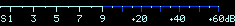

Aparentemente o Java não está instalado ou está desabilitado do seu computador. Você precisa instalar e/ou habilitar para este websdr para funcionar corretamente.
A partir do Java versão 7u51, ele precisa ser habilitado separadamente para cada site, veja em http://websdr.org/java.html para instruções.
Seu browser não possui suporte ao HTML5 WebAudio; por favor use uma versão recente do Firefox, Chrome, Opera, Edge ou Safari.
Iniciando Cachoeira, aguarde...
Vista do espectro:
Ou use o scroll e arraste no espectro.
Velocidade:
Tamanho:
Ver:
baseado na hora do seu dispositivo

Sinal:?dBPico:?dBVolume: 0dB
mudo
squelch
notch
notch2
Saída:
esquerdo
ambos
direito
DSP:high-boost
Gravação de audio:
Aparentemente seu browser não possui suporte para download da gravação; por favor tente com uma versão recente do Firefox, Chrome, Edge ou Opera.